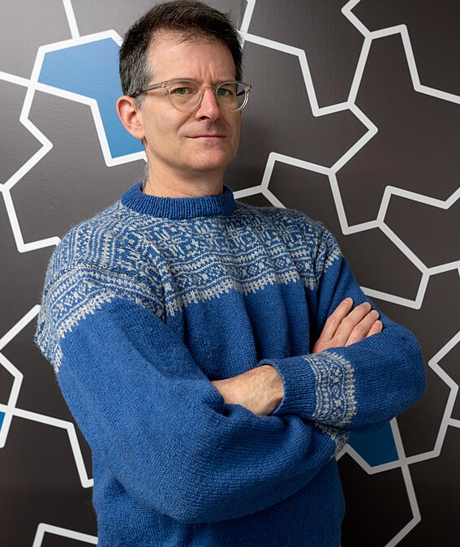

Tassellazioni
Periodiche e aperiodiche


Smaller & Smaller, M.C.Escher, 1956
17 gruppi di simmetria
1891: Evgraf Fedorov
1924: George Pólya


L'Alhambra (Granada, Spagna)
TODO: mostro tassellazioni periodiche con le stesse tessere
Tessere di Wang e
il problema del domino

"Se un insieme di tessere può tassellare il piano, allora può farlo anche periodicamente"
Congettura di Wang, 1961
Robert Berger nel 1966 dimostra che la congettura è sbagliata
Congettura di Wang
⇓
Il problema del domino è decidibile
⇓
Il problema dell'arresto è decidibile
Tessere di Wang aperiodiche
- Berger trova un primo insieme di 20 426 tessere (!!)
- Nella sua tesi di dottorato porta il numero a 104
- Nel 1996 Karel Culik II trova un insieme di 13 tessere
- Nel 2015 Emmanuel Jeandel and Michael Rao trovano un insieme di 11 tessere e 4 colori. Dimostrano che è il minimo
- 1966 Berger, 104
- 1968 Donald Knuth, 92
- 1971 Raphael Robinson, 6

Sir Roger Penrose
Tessere di Penrose (1)


Tessere di Penrose (2 e 3)


Weird math news: in 1997 Sir Roger Penrose took legal action against Kimbery-Clark for using aperiodic Penrose tiles on their "Kleenex quilted toilet tissue.
Quasicristalli
2011, Dan Shectman
premio Nobel per la chimica
Tessere aperiodiche
- 1964 : 20426 (Berger)
- 1966 : 104 (Berger)
- 1968 : 92 (Knuth)
- 1971 : 6 (Robinson)
- 1974 : 2 (Penrose)
Possibile che 2 sia il minimo?
Tessere aperiodiche
Ludwing Danzer conia il nome "einstein" (un pezzo) per indicare un ipotetico monotile aperiodico.
Nel 2010 Joshua E. S. Socolar e Joan M. Taylor scoprono una singola tessera, non connessa che tassella il piano, ma solo aperiodicamente

Il cappello (the hat)
Nel 2023, David Smith, matematico dilettante, scopre un monotile aperiodico

David Smith, Craig S. Kaplan, Joseph Samuel Myers, Chaim Goodman-Strauss
HatFest
20 - 21 July 2023, Università di Oxford

hatcontest
TODOIl cappello
Lo spettro

Lo spettro